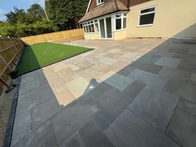
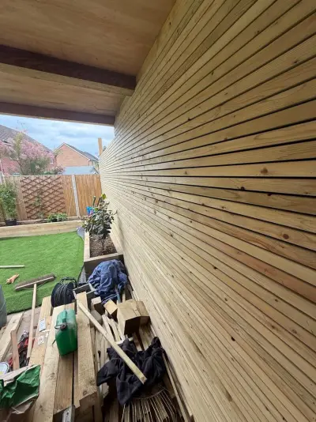
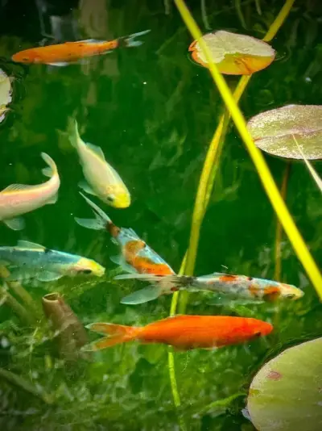

Expert Advice & Project Stories
Practical guides, honest advice and behind-the-scenes stories from our landscaping projects across West Sussex.

How Much Does a New Patio Cost in Chichester?
Complete breakdown of patio costs by material — from budget concrete to premium natural stone. Includes hidden costs to watch for.

Choosing the Right Fence for Your Garden
Close board, composite, picket or bespoke? Compare fencing types, costs and lifespans to find the right option for your property.

Water Features That Transform Your Garden
From contemporary blade falls to natural stone rills — discover how water adds an entirely new dimension to your outdoor space.

Before & After: Garden Transformations in West Sussex
Real project stories from Chichester, West Wittering, Petersfield and Worthing. See the dramatic results of professional landscaping.
Why Choose a Professional Landscaper? The DIY vs Pro Guide
An honest comparison of DIY vs professional landscaping — costs, quality, time and when to hire the experts.
Ready to Start Your Project?
Get in touch for a free, no-obligation consultation and quote.